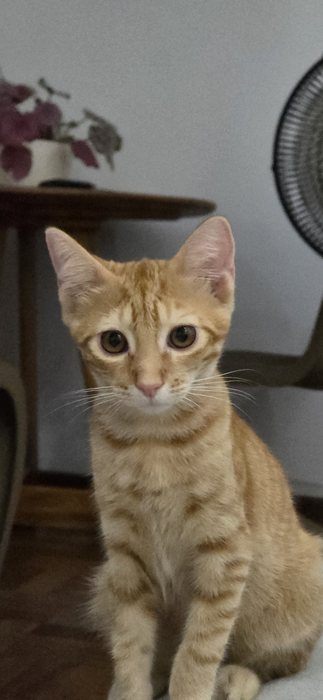

Eu era um explicador
Eu entendia a dificuldade dos colegas em aprender do jeito que o professor ensinava, e conseguia ensinar do meu jeito. Esse fio atravessa tudo: a rádio da escola, as monitorias, a sala de aula, a mentoria e o meu trabalho de hoje, que é transformar dado em explicação.
É uma história de muita dedicação e muita gente boa pelo caminho. Eu me orgulho dela. E ela é engraçada.
- A rádio da escolaAula de reforço no ar para a turma do terceiro ano.
- BatmanO apelido da graduação: monitoria como resgate.
- O jardineiroTopografia explicada de rastelo na mão.
- 26 disciplinasProfessor no UNIPAM de 2015 a 2023. Hidráulica foi a primeira.
- MentoriaHoje ensino o que aprendi fazendo.
- DadosO trabalho continua o mesmo: fazer alguém entender.
Os causos
O jardineiro e o pé de manga
Fase 1: o jardim da faculdade
A rádio da escola
Fase 0: onde tudo começou
Batman das monitorias
Fase 2: identidade secreta
Slash x Cauby
Fase bônus: a banda
O Uno 1992
Fase difícil: manutenção corretiva
Duas rodas
Fase de velocidade
Entrega pela rodoviária
Fase de vendas
O sítio e o carneiro hidráulico
Fase MacGyver
Conquistas desbloqueadas
O resto do inventário.
E o Fisher?

Ronald Fisher é o meu gato e o guia deste site. O nome vem do estatístico. Às 22 horas, na hora do gato louco, ninguém segura esse monstrinho para tirar foto: esta foi sorte.